Green Gas Giants, "GGG"s for short, are a rare special planet subtype in Elite: Dangerous. Their surface color generation is bugged, due to an oversight in the color selection algorithm for gas giants. As a result of this bug, not all colors are implemented correctly. For example, the bright color green is used as a default planet color before it goes through calculations based on surface temperature, composition, etc. to correctly change the color. Some value in the gas giant's characteristics causes the color picker to choose a value outside of the intended range, which returns no change in color, remaining bright green.
What are GGGs?

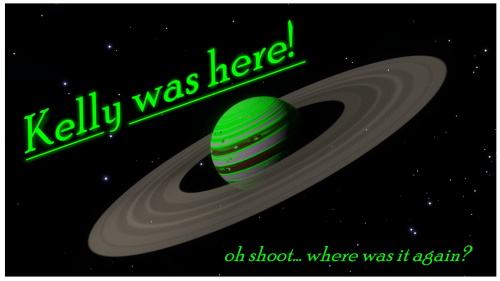
The first GGG was discovered in 3301. Interest arose over the next few years regarding these strange "glowing green gas giants", as nicknamed by the exploration community. These planets served as hot tourist destinations, as there were only a handful known to exist. With the release of the codex, these planets were recognized as an entirely separate planet type from their standard counterparts. The canon reasoning behind them being green is due to 'extremophile bioluminescent life' in their upper cloud decks. In more recent years, new GGG reports have lessened due to the game's lower player count. See all GGG locations on EDAstro's map
Identifying a GGG
Finding a Green Gas Giant is completely random. You could go through 200,000 systems and never find one. So, here are some ways to identify if you are in a system with a GGG:
FSS & Codex
On the FSS 'barcode', there is no difference between GGGs and standard gas giants. If your GGG has sufficient green color on it, you can easily tell via the image the FSS gives you. And if this is your first time visiting a green gas giant of that class in your current region, you will immediately recieve a codex entry for your discovery. NOTE: Water-based life GGGs have their codex entry bugged and will not show up in the codex. If this is not your first time visiting this class of GGG in the region, you won't get an alert, BUT it will still show up in your codex. You will find it in that specific class' entry, and scroll down to where you have 'Record Highest/Lowest in region' table.
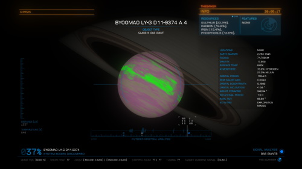
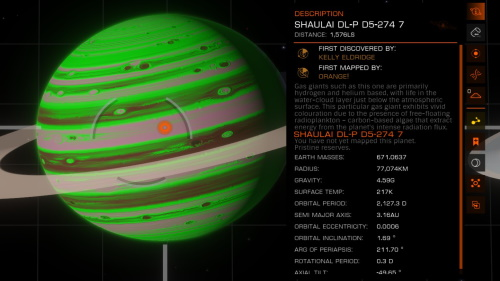
System Map & Planet Description
The system map accurately displays how the gas giant looks if you were to fly to it. As such, any green on the planet will show up here. Along with the change in color is a change in planet description. Each class has a different description for their reason being green. The quickest way to tell is by looking for the words 'This particular gas giant', 'bioluminescent life', 'vivid colouration' or 'Luminous vapour'. (You can view each GGG identifier sentence on their separate Class page from here)
Notable Stellar Phenomena
Within the regions of Ryker's Hope and Galactic Centre, systems hosting Green Gas Giants will always generate NSP locations within them. These locations are immediately visible when dropping out of hyperspace. Within them are K10-Type Anomalies, an anomaly type that only spawns around Green Gas Giants. This is perhaps the fastest possible way to know if a GGG is in your system in these regions. If there is no NSP location listed in your nav panel upon arrival, there is no GGG in that system.
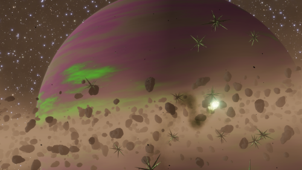
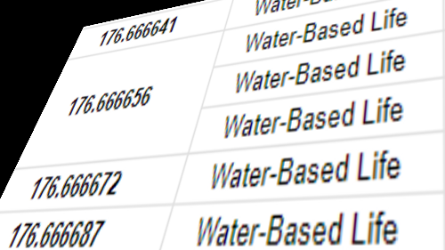
Surface Temperature
One of the confirmed physical values of a planet that decide if it becomes green or not is its surface temperature. For certain planet classes, gas giants will reliably become green when their surface temperature is equal to a certain value, or is within a small range of values. This is useful to those who search through datasets of known gas giants, as some GGGs might have slipped through the cracks and were not detected, but are listed on a spreadsheet. Only 2 GGGs have ever been found using this method, Boelts QJ-Y d1-1149 5 and Thaileia PJ-O d7-74 D 3.
How to use the site
What is edGGG?
The edGGG catalog is a community-run archive that keeps track of all known Green Gas Giants in the Milky Way. The site was created to allow for commanders to easily browse and search for GGGs and view them in detail, as well as to help explain what these planets are. I try to keep the site as up to date as possible, and when a new GGG is discovered, it is usually added here within 24 hours.
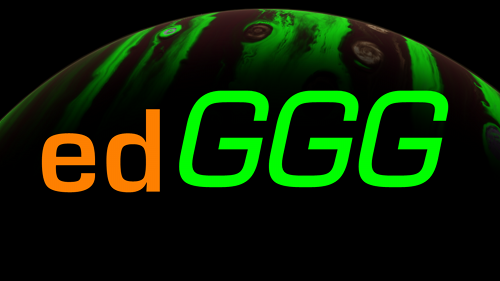
Search Page
edGGG's landing page is the search page. You can select a planet class to view GGGs designated under that class, or manually enter the name of a known Green Gas Giant to be taken to its information page. At the bottom of the Search page is the 'New This Year' section which will show all new GGGs discovered in the current in-game year. You can also click on their picture to be taken to their respective information page.
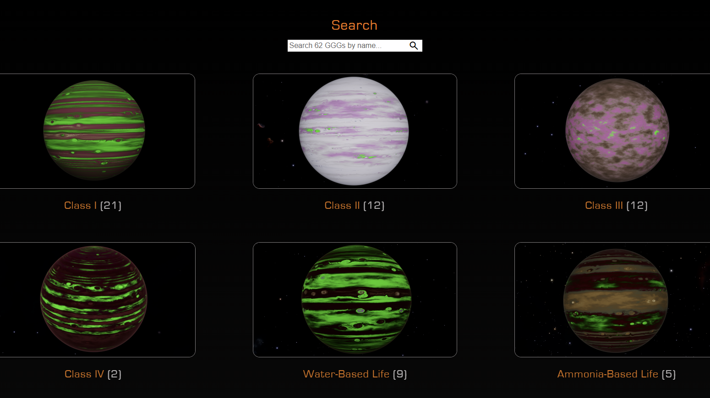
Planet Class Page
Upon selecting a class from the 'Search' page, you are taken to its own Class Page where all known GGGs of that type are listed in alphabetical order. Also included
is a brief description of the class and how they differ from other classes.
Most importantly, the special planet description that Green Gas Giants are given in the system map is also included here to help you remember how to differentiate it
from standard gas giants.
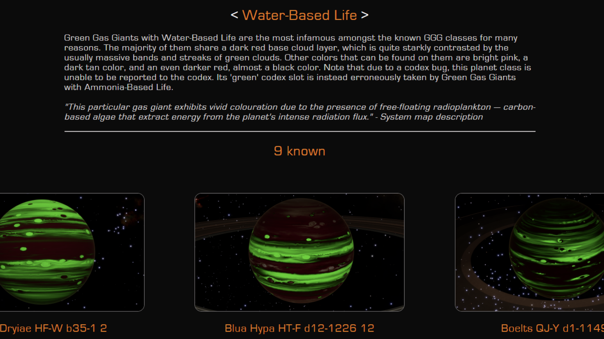
Information Page — Image Carousel
The Information Page is where you can view any GGG in great detail. The main image will always be the planet fully lit. You can use the arrows on either side of the frame to view more pictures of the planet from different perspectives, as well as from nearby moon surfaces, if applicable. The system map will always be the last picture of the carousel (Click the left arrow once from main image). All of these images are taken by me using the in-game High-Resolution Screenshot feature.
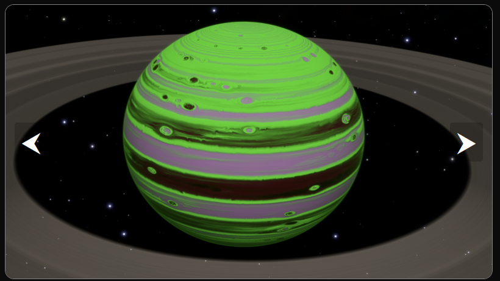
Information Page — Description
Under the image carousel is where the First Discoverer of the planet is listed, as well as its in-game date of discovery. If either of these fields cannot be
verified, it will be noted. The description section describes the characteristics of the GGG, as well as other notable or interesting information about it or the
system.
If the GGG has earned a nickname that the exploration community uses to refer to it, that name too will be included under the description paragraph.
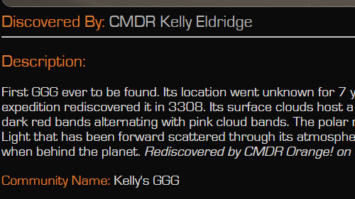
Information Page — Body Characteristics
To the right of the main image (or below the description if you are on mobile), there is a chart listing different physical characteristics and statistics of the
GGG. If you are unsure about what a certain field means, you can hover your cursor over the name of it for a description of what it represents.
The 'Parent Stars' field only lists stars that the GGG is directly orbiting.
If the 'Distance To Arrival' value is red, that means it is far from the hyperspace drop point.
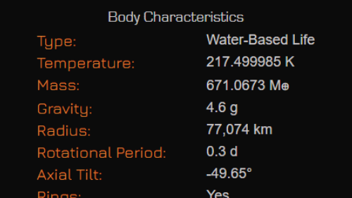
Information Page — Miscellaneous
Each page for a GGG has that planet's name at the top of the page. If you click the name, it gets copied to your clipboard. Below the name is its GGG Number,
which is given in order of discovery. The arrows to either side will bring you to the previous or next GGG in line.
To the far right of the page (or bottom on mobile) shows a top-down representation of the Milky Way, and the current GGG's location within it, denoted by a green
circle.
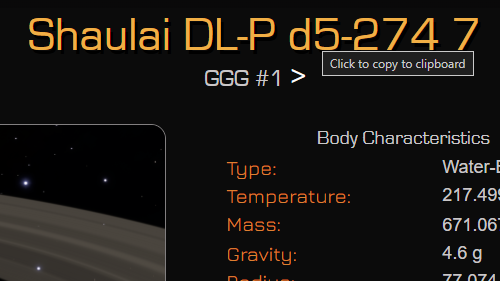